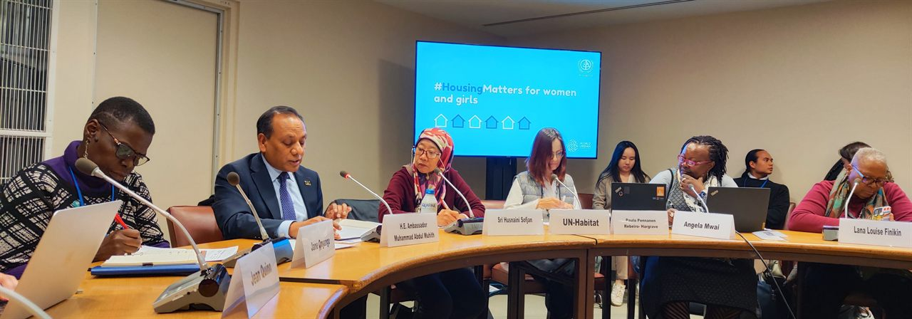
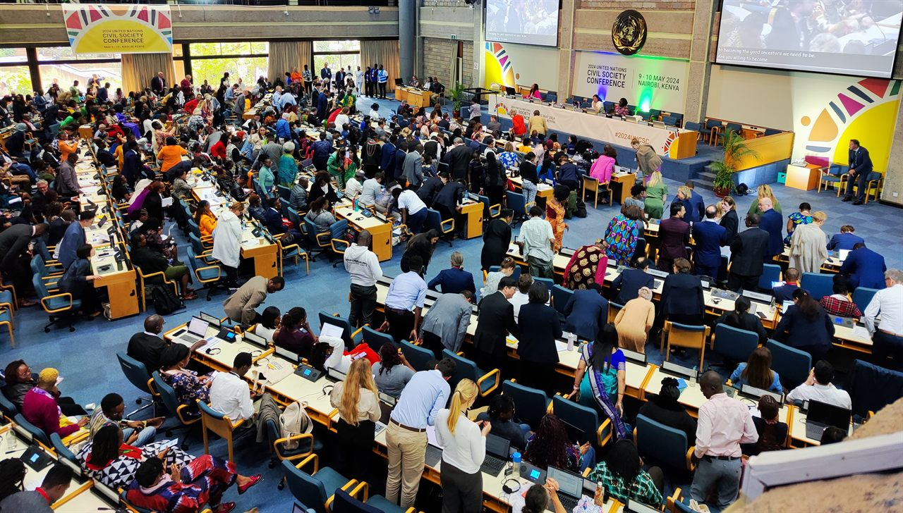
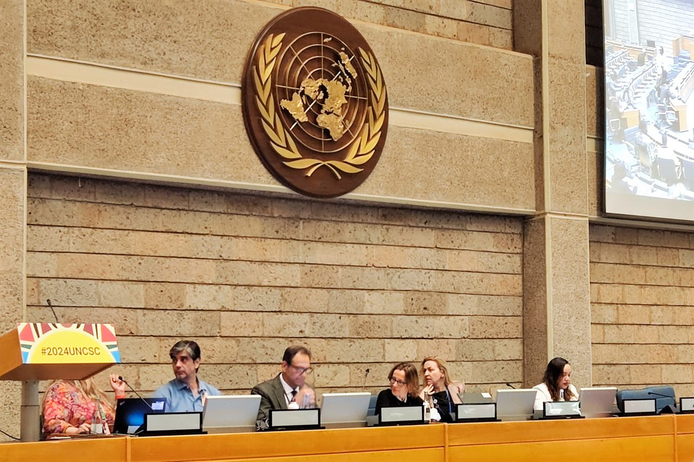

How We Work
We partner with organizations and experts to turn their knowledge and vision into actionable advocacy at regional and global United Nations (UN) forums. From mapping your work to identifying the right opportunities and designing tailored engagement strategies, our support ensures your interventions are strategic, effective, and aligned with your mission.
First, we come to understand your work. Then we identify opportunities, and finally we design a tailored engagement strategy. More details on these three steps is provided below:
1. Understanding Your Work and Organization

We begin with a comprehensive mapping of your organization, focusing on your strategic vision, thematic priorities, and geographic areas of work. By gaining a clear understanding of your objectives, we can advise on the regional and international UN mechanisms best suited to your goals. This helps you maximize impact and ensures that your interventions are fully aligned with your organization's aspirations.
2. Identifying Opportunities for Participation in Regional and Global UN Forums
Where to Engage: Key Conferences, Human Rights, and Environmental Forums for Your Organization
We guide you to the most relevant opportunities for engagement, drawing on our organizational analysis and deep knowledge of United Nations systems. Civil society, academic institutions, and individual experts bring unique expertise that can shape global policy and advance human rights and sustainable development.
Participation in UN forums—including the Human Rights Council (HRC), regional sustainable development forums, UNFCCC climate conferences, and key meetings in New York, Geneva, Bonn, Nairobi, and other strategic locations—provides a platform to share your expertise, insights, and perspectives in discussions that shape international norms and policies.

Engagement at these forums allows your organization to amplify the voices of marginalized communities, promote social and environmental justice, and contribute to achieving the Sustainable Development Goals (SDGs) across Europe, North America, Latin America, and Africa. By participating in regional and global UN forums, your organization gains visibility, credibility, and recognition as a trusted partner in international advocacy.
Selecting the right forums is essential. We monitor UN newsletters, official calendars, social media, and regional bodies such as the African Commission on Human and Peoples’ Rights (ACHPR), ensuring that your engagement is targeted and impactful.
3. Create a Tailored Engagement Strategy
How to Engage Effectively Across Global and Regional Opportunities
We design a detailed engagement strategy aligned with your organization's priorities and objectives. Our support includes:

- Guidance through registration and accreditation processes to attend in-person meetings in Geneva, New York, Bonn, Nairobi, and other key locations
- Successful design and implementation of Official Side Events at the UN
- Preparation and submission of written or video statements to UN bodies
Depending on your organization's needs, we also provide:
- Online and in-person capacity-building programs
- Support to obtain or prepare for ECOSOC consultative status
- Strategic advice on how to leverage UN mechanisms for maximum impact

Our approach balances long-term accreditation and engagement efforts with immediate, high-impact interventions, ensuring that your contributions are visible, meaningful, and aligned with both regional and global priorities.
We welcome partnerships that amplify the voices of independent civil society organizations, researchers, and individuals, enabling meaningful contributions in line with the mission of the United Nations to address global challenges, promote and protect human rights, uphold the Universal Declaration of Human Rights, and advance the implementation of Agenda 2030 and the Sustainable Development Goals.
Find out more